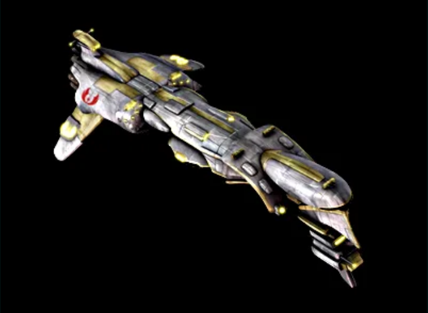
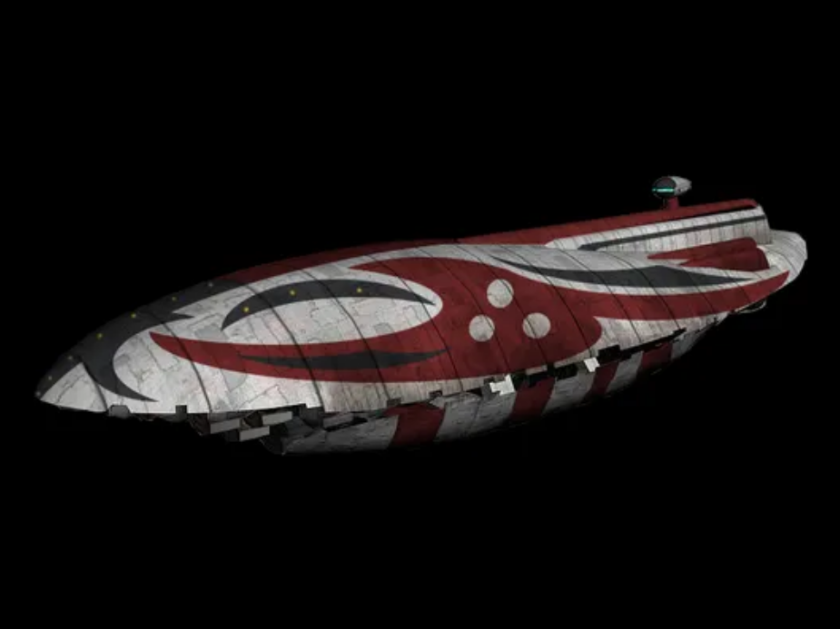

Banvhar Combine Quick Facts
The Banvhar Combine (BC) is based off of Lol II (246, -338). It is a mostly icy world, with some mountains and cleared terrain that is used as a base of operations and sales depot for BC. Traffic gets busy around pick-up times, and for that we have our own security force and cruisers. Working for and in conjunction with the Jedi Order, you can be assured that your order is finished and delivered to you in a timely fashion.
| Lol II | |
|---|---|

|
Galactic Coordinates (236, -338) |
| Population - 179,000,000 | |
| Owner - The Jedi Order | |
| Atmosphere - Cold/Toxic | |
| Status - In development | |
| Leader - Russ Leman | |
| 2IC - Joe Falco | |
| Flagship - [BC] Ranger | |

Character Biographies
Russ Leman

A hologram of Russ Leman appears. He is a Gotal about 1.7 meters high, with thick, short, light brown fur, wearing standard Jedi Order Robes. The only thing that appears off from what you would expect of a Jedi is the fact that he is wearing a hardhat. In addition to the lightsaber hanging on his side from his belt, he is holding a portable drill. He sets it down, smiles and speaks.
"Hello, galaxy! I am Russ Leman, High Councilor and Minister of Engineering of the Jedi Order. I present to you the Banvhar Combine, and some good stories from myself and the Jedi Order. First, allow me to introduce myself."
"My beginnings were many years ago for a small mining operation working for a man named Stephen Garrett. I spent a good year there learning the ropes and how the galaxy worked before moving on to bigger and better things. When I was first an adult, I wanted to join the rebellion and fly A-Wings against the Empire - so I joined the New Republic like any brash hot-headed young male might do against the Empire."
"I was there for several more years in the military doing a wide array of things - flying X-Wings, construction, transport - you name it and Star Fighter Command helped with it. During this time, Vexander Graves hosted a New-Republic wide force test to see if there were any potential users among the ranks. He found me among them."
"After being found Force-Sensitive, I did a lot of re-thinking of what I wanted to do. Between various gags and pranks that I liked to pull at the time I started to realize that fighting Imperials, no matter what I had felt several years before, was not my true calling. No matter how good a fighter pilot I might be, shooting them up wasn't going to solve any problems. In fact, it only seemed to create more in my mind."
"Feeling increasingly dis-satisfied with the military and the increasing amounts of repetition that I seemed to do, I made the decision to leave. I stayed in the New Republic for a while longer and began my long transition to the Jedi Order - and ultimately here to talk with you today."
During this time, the background scenery has changed. He has moved from a mine shaft to an office, the holo-recorder still playing. He draws a cup of water and continues.
"The first part of my transition here begins with the New Republic Ministry of Engineering. Cody Starslinger was in charge at the time. I spent my entire time there just building and fetching. It was peaceful and quiet that I think I needed to clear my head. After a little, I think, is when I noticed two things."
"First, the galaxy was slowing down. The energy that the galaxy once had was draining away at a very small rate each day. The second was that I was growing rather bored as a result of this. I was busying myself more and more with studying the Force rather than building. One day I sent out my comms for orders... and it took a week to find me back. Here I decided that moving on was a better option for myself at the very least. I reasoned that if anything was going to sit, it was going to stagnate. I put in my notice and decided to take up full-time Jedi training."
"My first trainer was Keegers Shyia. Great man, knew a lot about the Force. Training under him helped me grow a lot as a Jedi. I spent six months under his tutelage, studying hard every day while he worked on both my studies and running his own business. He helped me refine some of my lightsaber skill which helped a lot later on. I think what I learned the most about with him was how to grow in the Force. As a Force wielding Jedi, this piece served as a foundation on which I built the rest of my Jedi training and eventually ascended to Knight."
"My second trainer - and my Master - was Lindgart Adjer. His specialty was blademaster. Under him, I learned much about 5 forms of lightsaber combat. Makashi, Soresu, Ataru, Djiem So, and Nimian. The Shii-Cho I learned under Keegers helped me learn and become adept at these forms. He taught me to use the force in combat not to destroy, but to preserve life. The most important thing to remember in a fight for us is that we do not take life if we can help it."
"Soresu I see as an embodiment of this philosophy, creating a barrier that with a true master none can penetrate, and thus no harm can come to any. Preservation of life is one of our duties as Jedi. Being surrounded by life often gives one a respect that is not felt in many places. To have a sanctuary that is quiet and serene such as this gives us a sense of peace that many crave."
"Sorry if I rambled a bit there, I do get hung up on such things. Moving along."
Russ shakes his head, and sips his water again.
"I came out of Lindgarts tutelage not as some hot-headed X-Wing jock from several years ago, but as a Jedi who tried to think things through. Well, maybe not. It's hard to see ones self most of the time I find. No level of self-actualization for me seems to be quiet enough."
"Anyways, after training I wandered for a while as a small-time trader. I made money, built some small businesses, acquired a few freighters, and got to work on an idea that I had from watching internal JO politics and listening to the leadership - to found a group for the Jedi to profit off of. For a long time while building up, I wondered what exactly to get in to. Ships? Real estate? Medical? Trouble with all of that is it needs resources - the ones that come from the ground. So I decided that I should pursue mining."
"I knew I would need help. To get this together, I put out some feelers. I got Joe Falco in on it to help me found it, along with Akhu, Fias, Johnny and many others. When it was all put together, said, and done - I broke ground and founded Banvhar Combine."
"As of now, Banvhar Combine is owned by The Jedi Order. I get the raws out of the ground, and then the JO puts them to use. Since then, we've invested in medical as well. Dorian is very good at it too - makes a heck of a lot more with his bacta than I could with my mel. We've grown a lot since I have started this venture up 6 months ago, and it's always good to see the Jedi Order moving forward."
"As of now, I have found myself on the High Council. Earning my Knighthood in the manner I did, in addition to the massive effort I have invested in the Jedi to see them grow is often attributed to why I am there. But honestly... I really don't know if that's true. Personally, I think Onasha saw something before she perished. What it was I might never know, but she wanted me on the council. And we all know how she was."
"Now I find myself managing or helping to manage all aspects of development in the Jedi Order that involve construction or resources. A full time job for sure, and one that I can only hope to keep up in to the future. Now I find myself broadening my horizons here, talking to you."
The screen goes blank.
Our Fleet
Go to topRanger
The Corona Class Frigate Ranger is the flagship of the Banvhar Combines security fleet. It boasts 10 medium turbolaser batteries, 4 ion cannon batteries, 10 heavy rapid-fire anti-starfighter laser batteries, and even a tractor beam. Anything that is too small or to great to deal with on its own, it can launch 2 squadrons of Y-Wing fighters to deal with. Whie not a Star Destroyer, with this and other Corona frigates in the Banvhar Combines arsenal, any pirate or imperial raids that happen upon our assets will be met with fierce resistance.
| Statistics | Armaments | ||
|---|---|---|---|
| Name - [BC] Ranger | 10 Turbolaser Cannons | ||
| DOM - Y14 D308 | 10 Heavy Laser Cannons | ||
| Manufacturer - Frei'tek | 4 Ion Cannons | ||
| Serial No. - 335952 | 1 Tractor Beam Projector | ||
| Length - 275 meters | 24 Y-Wings | ||
| Weight - 285,000 tonnes | |||
| Perishables - 5 years | |||
| Jedi Service No. - BC-1 | |||
| Captain - [Classified] |
Space Bus
The GR-75 Gallofree Medium Transport Space Bus is classified as a heavy hauler. When teamed up with a BFF-1 Bulk Freighter such as the Brick Flight, it is capable of transporting and supplying the workforce required to develop an entire planet. Sporting light armament to help make up for its slow speed, the Space Bus has the ability to drive through pirates and get the goods to where they need to go.
| Statistics | Armaments | ||
|---|---|---|---|
| Name - [BC] Space Bus | 8 Laser Cannons | ||
| DOM- Y11 D16 | 2 Tractor Beam Projectors | ||
| Manufacturer - Frei'tek | |||
| Serial No. - 170843 | |||
| Length - 90 meters | |||
| Weight - 70,010 tonnes | |||
| Perishables - 6 months | |||
| Jedi Service No. - BC-3 |